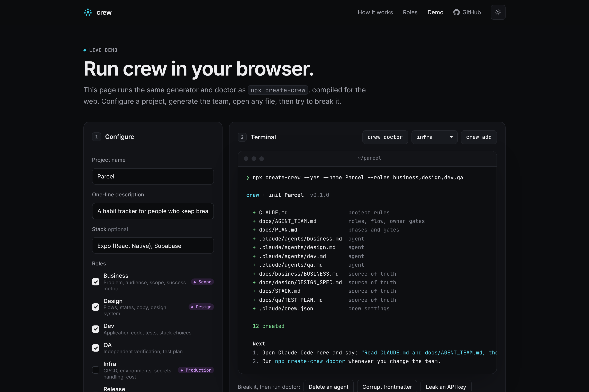

crew
3/7
How it works · 1
One command scaffolds the team.
Role agents, source-of-truth docs and owner gates, in any repo. Existing files are never overwritten silently.

author dev reviewer dev verdict ✓ looks good to me
Decisions live in chat history. Nobody plays a different role, so you end up as the only reviewer.
Role agents, source-of-truth docs and owner gates, in any repo. Existing files are never overwritten silently.
Every task starts from a written brief and ends with a fixed handoff block. Evidence over assertion.
Scope, design, production, ship, publish: the orchestrator stops and asks. Silence is not approval.
Owner │ goal ▼ Orchestrator ── briefs, routing, PLAN.md ├─▶ business scope · metric ◆ G1 Scope ├─▶ design flows · states · copy ◆ G2 Design ├─▶ dev code · tests ├─▶ qa independent verdict ✗ FAIL → author ├─▶ infra CI · deploys ◆ G3 Production ├─▶ release version · go/no-go ◆ G4 Ship └─▶ marketing launch drafts ◆ G5 Publish
It checks the setup against its own documents, exits 1 on errors and never echoes a secret. crew is built by its own crew.

